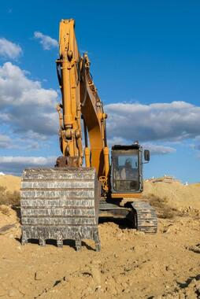

¿POR QUÉ ELEGIR EXCAVATOR PRO? Somos líderes en excavaciones profundas y movimientos de tierra en Cataluña. Nuestra maquinaria especializada es la alternativa más rentable y segura para trabajos en entornos urbanos.
La prioridad del equipo humano de Exariser es ofrecer un servicio ágil, flexible y de calidad. Para conseguirlo contamos con una extensa flota de maquinaria y vehículos propios con los cuales podemos ejecutar los proyectos más sofisticados con total eficacia.
Nuestra excavadora giratoria HITACHI 350 TELESCOPIC ARM es única es España. Su brazo telescópico consigue hasta 25 metros de profundidad sin usar rampas. La solución idónea parar simplificar la ejecución de obras con la máxima seguridad.

La maquinaria de grandes dimensiones nos permite realizar proyectos de obra civil de gran envergadura. Esto no nos impide renunciar a los trabajos que requieren precisión. Entre nuestras más de 50 máquinas, contamos con modelos muy diversos que se adaptan a espacios reducidos y a proyectos donde la exactitud es esencial.
El equipo especializado que forma Exariser, la amplia gama de maquinaria para todo tipo de trabajos y nuestra flota propia de vehículos nos capacita para proporcionar soluciones flexibles y personalizadas a nuestros clientes.